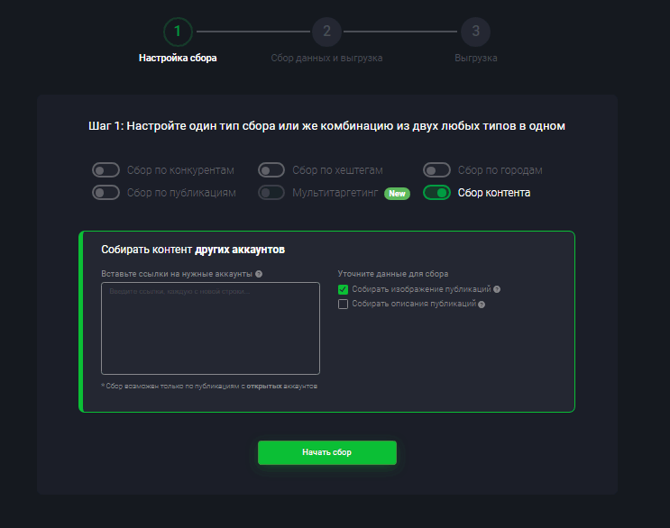
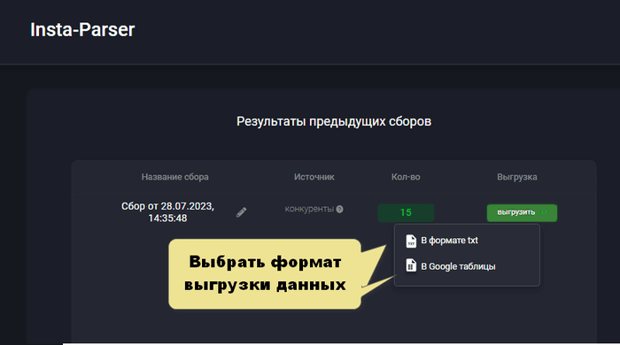
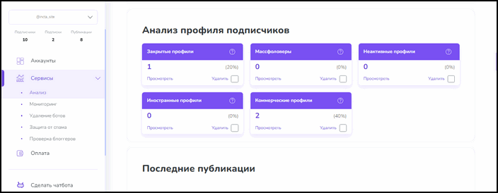
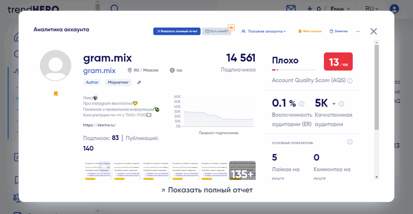
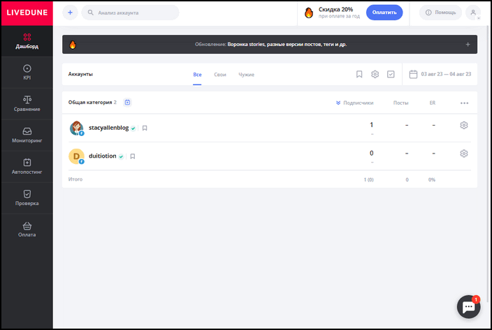
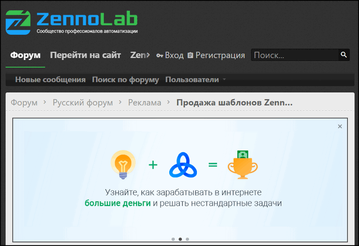

Парсинг в Инстаграм: как собрать аудиторию подписчиков

Парсинг аудитории в Инстаграме* включает сбор сведений потенциальной целевой аудитории, фильтрацию от ботов и страниц, которые не подходят по параметрам. Провести анализ можно самостоятельно или воспользоваться дополнительными сервисами.
Собрать данные потенциальной ЦА в Instagram*
Чтобы собрать информацию о целевой аудитории, автору нужно изначально определить, какой тип подписчиков ему необходим. Можно разделить на три категории:
- временные, но активные. Участники конкурсов, активные комментаторы;
- постоянные, но менее вовлеченные в контент;
- боты и фейки. Неактивная аудитория, только для увеличения количества.
Перед сбором рекомендуется удалить ботов из своего аккаунта Instagram, далее с помощью рекламных кампаний и использования основных разделов Инстаграма* можно набрать первую аудиторию, которая будет менее активна. Чтобы подобрать постоянных подписчиков, необходимо:
- определиться с темой аккаунта;
- выделить географию и пол потенциальной аудитории;
- выбрать возрастную категорию;
- проанализировать интересы.
Для магазинов и пользователей, занимающихся продажами в социальной сети, также важен предполагаемый доход. Его можно определить по странице человека или, если ранее уже был настроен рекламный креатив и запись была рекомендована пользователям с определенным типом устройств, доходом. Парсинг аудитории необходим и в случае, если автор аккаунта планирует продвигать услуги через социальную сеть через стандартные рекламные кампании. Это базовое представление о том, на какую аудиторию стоит рассчитывать.
Как применить собранную базу в Инстаграм*
Собранная база с помощью парсинга актуальна, как для создания стандартных рекламных кампаний, так и при фильтрации аудитории. Например, автору необходима активная аудитория, но среди подписчиков есть «мертвые» страницы. При автоматизированном парсинге такой ситуации можно избежать: указать в фильтре, что не будут выбраны профили без аватарок, Историй и с определенным количеством подписчиков. Варианты применения базы:
- для изучения конкурентов. Определить средний типаж подписчиков;
- дальнейшее продвижение и поиск своей целевой аудитории;
- быстро проанализировать уже своих подписчиков.
Любой из вариантов можно реализовать с помощью парсера. И сервисов, который направлены на мониторинг страницы. Причем следят не только за своим аккаунтом, а и подключают страницы конкурентов.
ТОП-7 лучших сервисов для Instagram*
Парсинг аккаунтов в Инстаграм* можно выполнить через автоматизированные сервисы. К списку лучших относятся:
- Insta-Parser. Показывает перечень подписчиков и подписок, собирает данные о контенте;
- ZengramParser. Собирает данные об аудитории, устанавливает защиту от спама и ботов;
- LiveDune. Подробная статистика аккаунта, работа в команде;
- InstaHero. Мониторинг страницы, показывает данные конкурентов;
- TrendHero. Проверка и аналитика блогеров, качество своего блога;
- ZennoParser. Автоматизированные действия, бот для выполнения задач;
- InstaPlus.pro. Накрутка лайков, подписчиков и комментариев, подбор сведений.
Большая часть работает без привязки к аккаунту в Инстаграме*. Поэтому беспокоиться о безопасности страницы не стоит. Также, у них есть подключение к чужим блогам, чтобы посмотреть статистику или узнать количество ботов.
№1 Insta-Parser
Сервис Insta-Parser изучает аудиторию и выдает отчет по параметрам, которые указывал владелец блога. Например, нужно собрать данные о подписчиках конкурента, но исключить из них ботов. При добавлении новой задачи, пользователь указывает при каком количестве подписок не учитывать страницу, наличие автарок и текущих Историй.

Возможности сервиса:- собирать данные об аудитории: подписчики, подписки;
- сбор по хештегам и городам;
- сведения по публикациям: лайкам и комментариям;
- мультитаргет. Выбор отдельных параметров;
- сбор контента. Загрузка фото, описаний к публикациям.

Чтобы воспользоваться сервисом, нужно пройти регистрацию и заполнить информацию по странице, с которой будут считаны данные. Запустить первый парсинг:- Зайти в Insta-Parser по адресу электронной почты или с помощью аккаунтов социальных сетей.
- Выбрать тип сбора данных – указать никнеймы страниц откуда нужно собрать информацию.
- Запустить создание отчета.
Сервис оповестит, когда все данные будут собраны и можно будет посмотреть их в формате таблицы. Если пользователь хочет после первого таргета запустить следующий, то данные предыдущего будут доступны в разделе «История». Там же можно скачать предыдущие сведения.
№2 ZengramParser
Zengram направлен на изучение сведений об аккаунте, его защиту от ботов и спама. В дополнительных настройках, при запуске любой из задач, пользователь сможет указать «Защиту от спама» и все комментарии, сообщения в Директ с рекламой будут удаляться. Возможности Зенграма:
- выбирать аудиторию сбора по половой принадлежности;
- фильтрация аккаунтов. Отображать приватные и коммерческие;
- подписки и подписчики. Выбрать максимальное и минимальное значение.
По итогам придет отчет в формате таблицы, согласно которому можно собрать потенциальную аудиторию и посмотреть страницы активных подписчиков конкурентов.
Подробнее о том, как самостоятельно собрать аудиторию можно узнать из нашей статьи - "Стань лучшим в своей нише всего за 10 дней"
№3 InstaHero
Направлен на анализ целевой аудитории, удаление ботов и защиту от спама. К дополнительным функциям относится проверка блогеров: перед последующим сотрудничеством или в качестве проверки конкурентов.

В InstaHero доступны функции:- анализ. Просмотр текущих данных об аккаунте;
- мониторинг. Постоянное наблюдение за чужой страницей;
- удаление ботов. Очистка профиля от фейков;
- защита от спама. Удаление сообщений из комментариев и Директа, которые содержат ссылки и сведений, которые могут навредить пользователю;
- проверка блогеров. Сведения о популярных личностях, аналитика страницы.
Для работы с сервисом можно подключить учетную запись и постоянно наблюдать за ростом подписчиков, активностей. Отдельная функция с проверкой блогеров работает как с новыми авторами, так и содержит базу уже популярных.
№4 TrendHero
Показывает качество страницы, возможные меры по привлечению аудитории. С помощью TrendHero можно посмотреть сведения об аудитории блогера, собрать средний показатель по своим подписчикам и организовать защиту от ботов и спама.

Отличительная функция – «Сравнение». Пользователь указывает две страницы и сервис проводит анализ по аудитории, активности и количество ботов. Другие возможности:- мониторинг. Постоянное наблюдение за своим или чужим аккаунтом;
- анализ. Временный просмотр данных: можно указать ссылку на любой аккаунт;
- сведения о рекламных постах. Посмотреть на странице блогера, какие рекламные кампании были запущены;
- составить список пользователей, которых нужно регулярно просматривать;
- поиск блогеров. Чтобы посмотреть их статистику и аналитику аккаунта.
С помощью Trend Hero просто анализировать конкурентов, а также проводить постоянный мониторинг за чужими страницами.
№5 LiveDune
Парсинг подписчиков в Инстаграм* возможен через LiveDune: сервис открывает доступ к подробной статистике, показывает активность партнеров и предлагает автоматический постинг.

Возможности:- анализ и мониторинг. Посмотреть свои данные и сведения конкурентов;
- KPI. Полезные действия со стороны партнеров;
- автоматический постинг. Предварительно добавить публикации для размещения;
- проверка. Изучить страницу блогера или конкурента на ботов.
Чтобы воспользоваться, нужно авторизоваться и перейти к добавлению хотя бы одного аккаунта. Сервис покажет график развития: прирост аудитории, падения и накрутки. Через вкладку KPI удобно просматривать действия каждого участника команды, если за развитием страницы следит несколько человек.
№6 ZennoParser
Программное обеспечение для автоматизированных действий. В его функции входит возможность создания отдельных ботов и мини-программ. Чтобы использовать ZennoParser нужно установить программу с официального сайта, пройти регистрацию и запустить ПО. На главной появится выбор: «Создать новый проект» или «Воспользоваться шаблонами». Создавая новый, пользователь сможет создать небольшую программу под собственные запросы:
- сбор данных аудитории. Номера, описания страниц, никнеймы;
- автоматическая регистрация без участия пользователя;
- написание комментариев и добавление в подписки;
- рассылка сообщений на выбранную базу.

Чтобы создать мини-программу, нужно запустить Zenno Project Maker и нажать в появившемся поле по значку: «Start» - Добавить действие и из выпадающего меню выбрать: «Данные» - Операции над профилем. Пользователю нужно совершить действия и сохранить, чтобы программа их повторяла.№7 Instaplus.pro
Приложение InstaPlus соберет базу и покажет её на мобильном устройстве. Преимущество сервиса в возможности работать без компьютера или ноутбука. Нужно установить на смартфон файл в формате APK, подключиться к своему аккаунту и начать работу. Что предлагает Instaplus:
- накрутка лайков, подписчиков и комментариев;
- удаление ботов и фильтрация аудитории;
- сбор данных по конкурентам;
- массовая отписка.
Относительно парсинга: приложение собирает информацию по текущей аудитории и показывает перечень никнеймов списком. Кроме экспорта, предлагает импорт, чтобы определить подписки на другие подобные профили. Актуальная функция: «Поиск и фильтрация»: собирает подписчиков определенного пользователя, а также всех, кто ставил лайк или комментировал. После этого можно выставить фильтр по ботам и активным участникам, чтобы получить информацию о вовлеченной аудитории.
Что лучше: естественное продвижение или парсинг
У естественного продвижения есть преимущества, которыми не обладает парсер. Это активная аудитория, которая пришла по той причине, что ей интересны записи профиля. Обычно совершают переход из видео или постов, которые были им прорекомендованы. Или из-за того, что люди из подписок поставили лайки: появится отметка «Понравилось вашему другу». Другие плюсы естественного продвижения:
- диалог с подписчиками. Пользователи, которые готовы ставить лайки и оставлять комментарии;
- привлечение друзей и знакомых одного заинтересованного. Чем чаще ставят лайки, тем быстрее публикация окажется в Рекомендациях;
- простое сотрудничество с рекламодателями. В статистике не будет резкого скачка или спада по аудитории;
- низкая вероятность блокировки.
У автоматизированных сервисов есть недостаток с постоянной вероятностью блокировки страницы.
Но большинство уже перешли на систему, когда подключаться к аккаунту напрямую не нужно. Такая проблема при парсинге может возникнуть только в одном случае – нужно собрать базу из Директа или из закрытого профиля. У парсинга преимущество в скорости и отсутствии необходимости привлекать автора к однотипным действиям. В течение пары часов будет собрана база, содержащая всех подписчиков конкурентов, среди которых можно выделить ботов, не просматривая страницу каждого отдельно.